Naoshima, Kagawa: things to do, food and stays
Naoshima · Kagawa
Naoshima
Highlighted on the Kagawa map.

Stay
直島旅館 ろ霞

Naoshima Ryokan Ro Kasumi
Ryokan inn in Naoshima with open-air baths.
ベネッセハウス
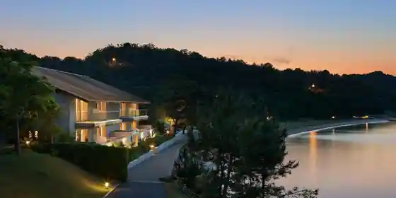
Benesse House
ホテルライトスタイル
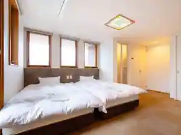
Hotel Raitosutairu
直島町ふるさと海の家つつじ荘
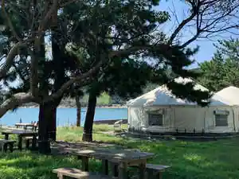
Naoshima Machi Furusato Uminoie Tsutsuji So
直島コテージ
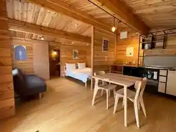
Naoshima Cottage
マイロッジ直島
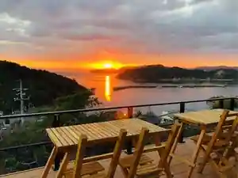
Mai Lodge Naoshima
クイントハウス直島
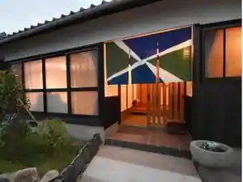
Kuinto House Naoshima
Dining
テラスレストラン

Terrace Restaurant
地中カフェ
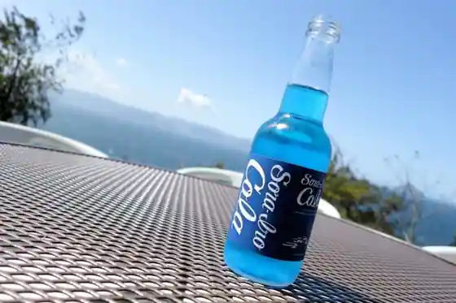
Chichu Cafe
カフェサロン 中奥
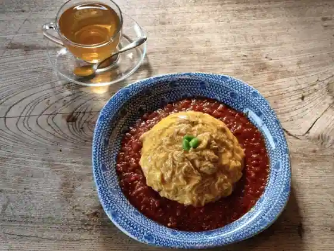
Cafe Saron Chuoku
あいすなお
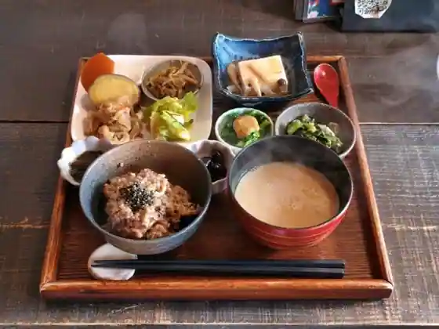
Aisunao
ベネッセハウス ミュージアムカフェ
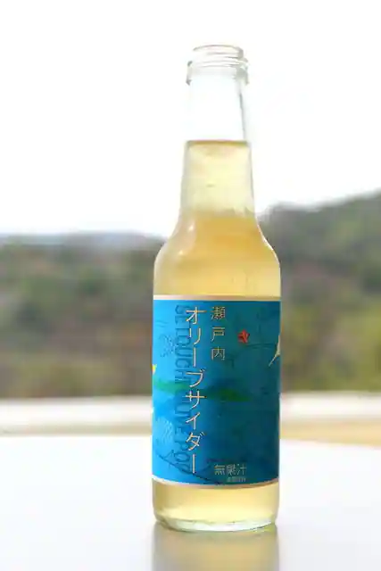
Benesse House Myujiamu Cafe
日本料理 一扇
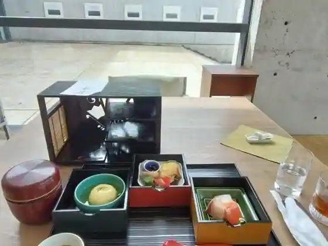
Nihonryori Ichi Ogi
木の崎うどん 直島店
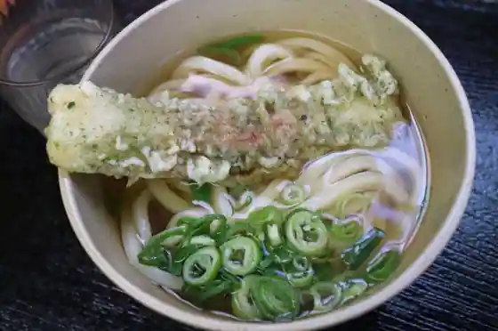
Ki No Saki Udon Naoshima
naoshima gelato
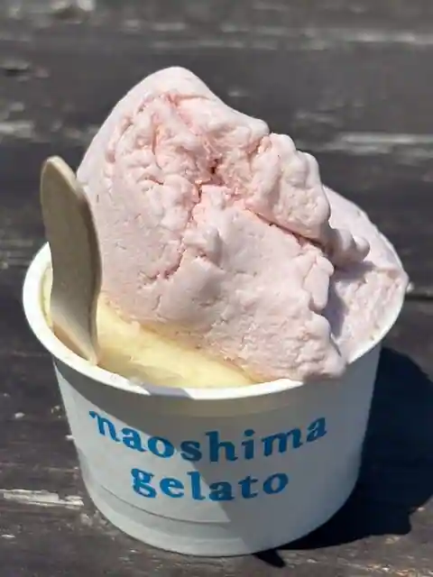
naoshima gelato
カフェ おうぎや
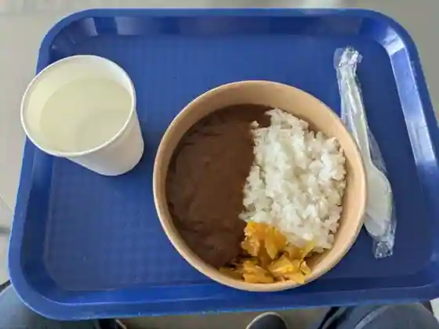
Cafe Ogiya
マイマイ
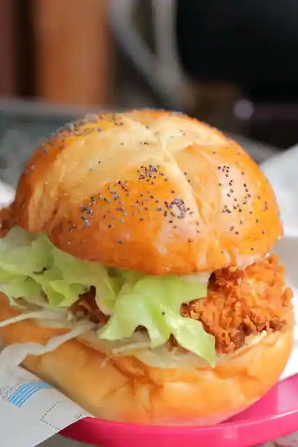
Maimai
アカイトコーヒー
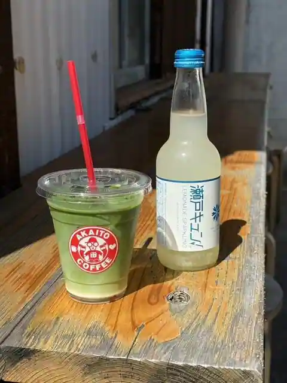
Akaito Coffee
直島カフェ コンニチハ
Naoshima Cafe Konnichiha
ゆうなぎ
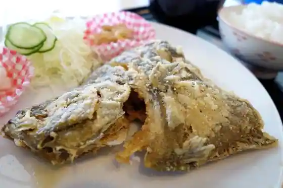
Yunagi
ミカヅキショウテン
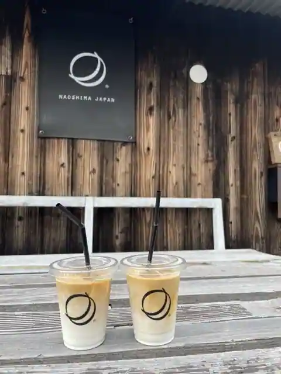
Mikazukishouten
ニューおりんぴあ
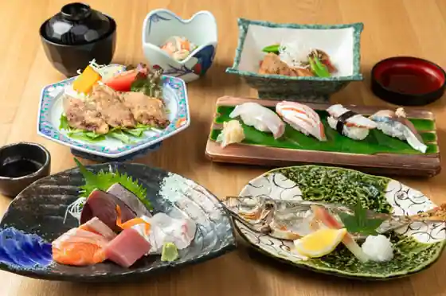
Nyu Orinpia
&CAFE
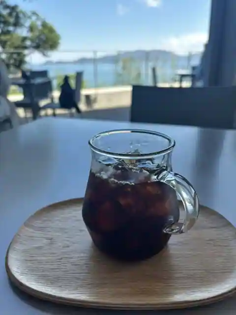
&CAFE
UMI NO STAND つつじ荘
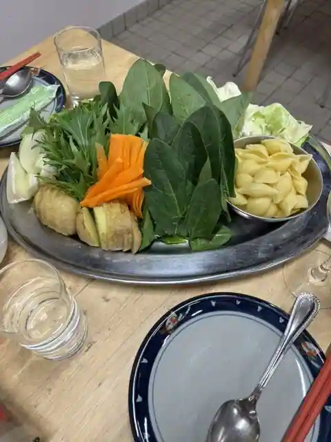
UMI NO STAND Tsutsuji So
フランコイル
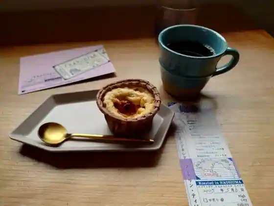
Furankoiru
NAOSHIMA COFFEE
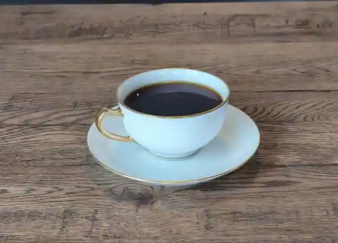
NAOSHIMA COFFEE
Cin.na.mon
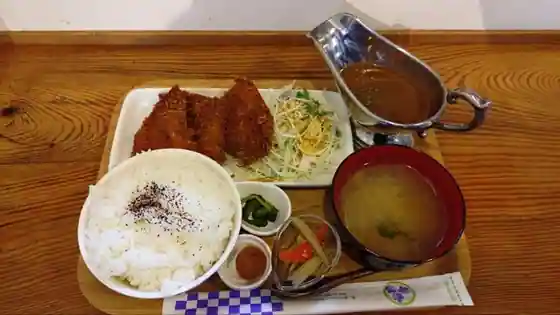
Cin. na. mon
Luke's Pizza & Grill
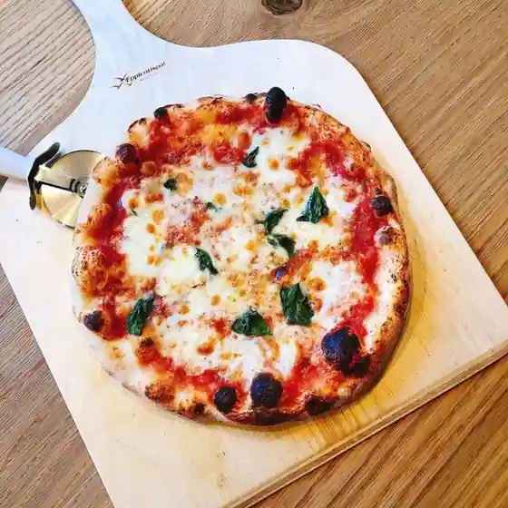
Luke's Pizza & Grill
エプロンカフェ
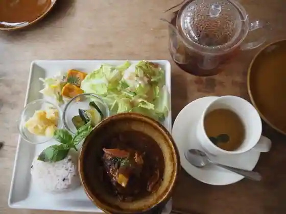
Epuron Cafe
スパーキーズ コーヒー
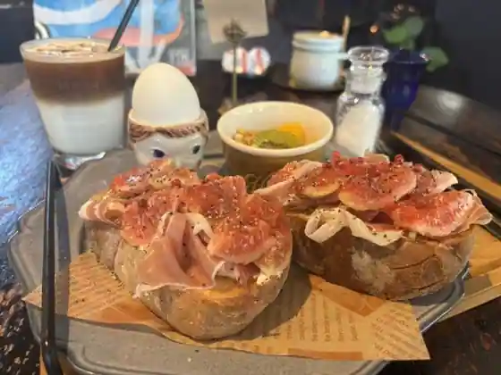
Supakizu Coffee
Sights
Kusama Yayoi (Kabocha)
Miyaura Minato
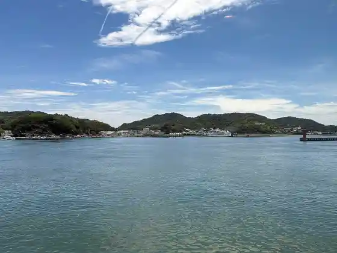
Chichu Art Museum
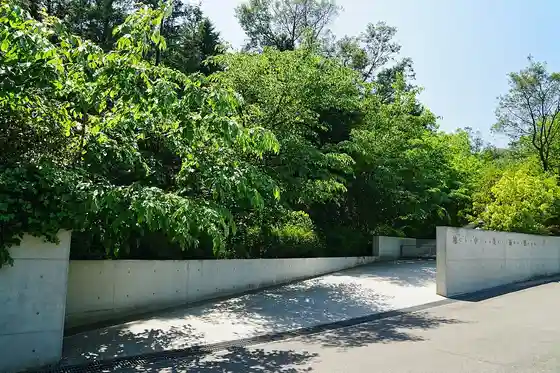
Benessehausu Museum
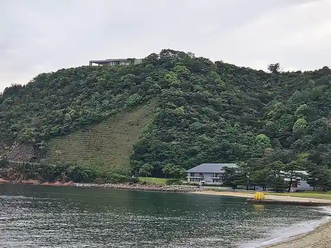
Sumomo U Kan Art Museum
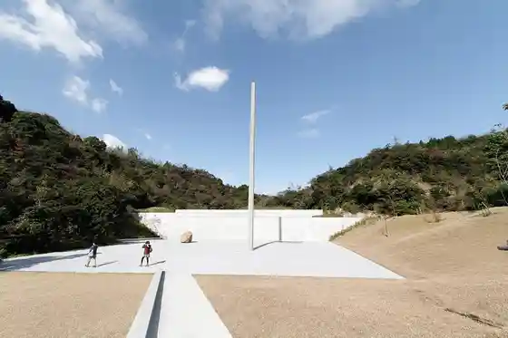
Naoshima Pavirion
Ie Purojiekuto Go Shrine
Kon Dan Chi Beach
ANDO MUSEUM